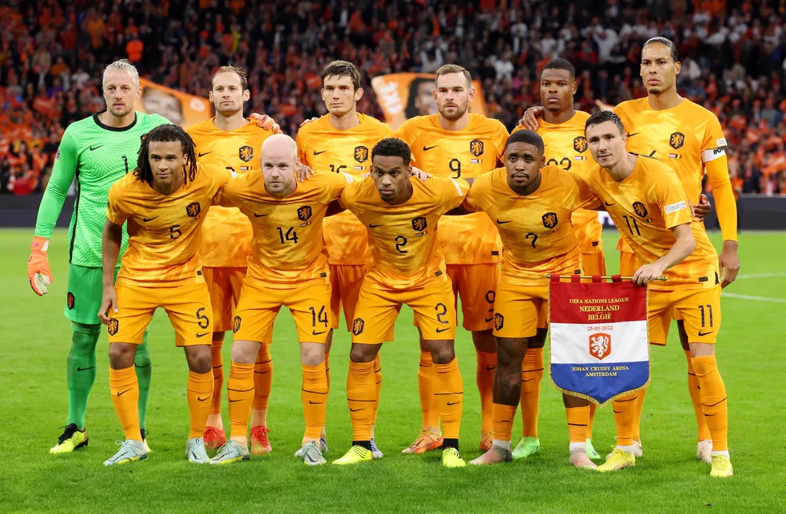

FutCup


A Holanda é a primeira seleção classificada às quartas de final da Copa do Mundo. Neste sábado, os holandeses venceram os Estados Unidos por 3 a 1 pelas oitavas de final, no Estádio International Khalifa, e carimbaram a vaga à próxima fase. O zagueiro Van Dijk avaliou a partida da Laranja Mecânica.
"Acho que jogamos bem, mas poderíamos ter jogado melhor. Estamos nas quartas de final, estamos contentes, conseguimos esses belos gols, mas poderíamos ter mais. Para o final, tivemos mais dificuldades e fomos surpreendidos. Se continuarmos assim, vamos bem", declarou o jogador do Liverpool.
Ler mais...

Senegal chegou às quartas de final da Copa do Mundo FIFA de 2002, tornando-se a segunda seleção da África a realizar esse feito (depois de Camarões em 1990). Conseguiu derrotar a, na época, atual campeã mundial França, terminar em segundo no grupo e vencer a Suécia na prorrogação nas oitavas de final, antes de perder para a Turquia nas quartas de final.
Ler mais...
O Equador está de volta a uma Copa do Mundo, e fará sua estreia contra o anfitrião Catar, no domingo (20), no Al Bayt Stadium.
A Seleção Equatoriana chega ao Catar 2022 após terminar na quarta colocação das Eliminatórias Sul-Americanas, com 26 pontos, e está de volta ao Mundial após 8 anos: a última vez que se classificou foi no Brasil, em 2014.
Ler mais...
A Seleção Catari de Futebol representa o Catar nas competições de futebol da FIFA. O Catar está sediando a Copa do Mundo FIFA de 2022, e por isso participa de sua primeira Copa com a sua seleção. Em 2019, o Catar conquistou o título mais importante de sua história, a Copa da Ásia de 2019, vencendo o Japão, por 3–1. A final foi disputada em Dubai, nos Emirados Árabes Unidos.
Ler mais...